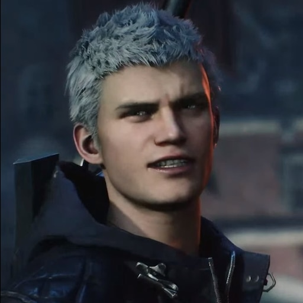
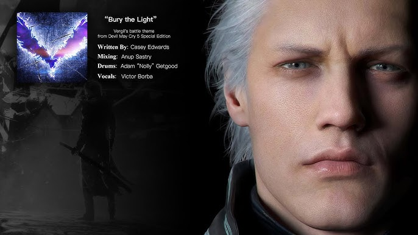

"Devil May Cry 5" sigue la historia de tres personajes principales: Nero, Dante y V. La trama gira en torno a la invasión demoníaca liderada por el demonio Urizen, quien ha plantado un árbol demoníaco llamado Qliphoth en la ciudad de Red Grave. Los héroes deben unirse para detener la amenaza demoníaca y descubrir los secretos detrás de la identidad de V y la verdadera naturaleza de Urizen.

Historia de Devil May Cry 5
|  |
NeroNero es un joven cazador de demonios y uno de los protagonistas de "Devil May Cry 5". Armado con su espada Red Queen, su pistola Blue Rose y su nuevo brazo cibernético Devil Breaker, Nero está decidido a derrotar a Urizen y proteger a los inocentes de la invasión demoníaca. |
DanteDante, el legendario cazador de demonios y protagonista de la serie, regresa en "Devil May Cry 5". Con una variedad de armas icónicas como Rebellion, Ebony & Ivory, y su nueva moto-sierra Cavaliere, Dante lucha para detener a Urizen y salvar el mundo del caos demoníaco. |
|
VV es un misterioso nuevo personaje en "Devil May Cry 5". A diferencia de Nero y Dante, V no pelea directamente, sino que invoca a tres demonios: Griffon, Shadow y Nightmare, para que luchen por él. V tiene un pasado oculto y una conexión secreta con los eventos que rodean la invasión demoníaca. |
|
UrizenUrizen es el principal antagonista de "Devil May Cry 5". Es un poderoso demonio que ha sembrado caos y destrucción al plantar el árbol Qliphoth en Red Grave. Urizen busca obtener el fruto del Qliphoth para convertirse en el rey de los demonios y gobernar sobre todas las dimensiones. |
|
VergilVergil, el hermano gemelo de Dante, también juega un papel crucial en "Devil May Cry 5". Tras su regreso, Vergil busca recuperar su fuerza y poder perdidos. Su compleja relación con Dante y su lucha interna entre su humanidad y su lado demoníaco son elementos centrales de la historia. |
Soundtrack de Devil May Cry 5
El soundtrack de "Devil May Cry 5" es una mezcla electrizante de rock, metal y música electrónica que captura la intensidad y la adrenalina del juego. A continuación, se presentan algunas de las mejores canciones del juego:
Devil Trigger"Devil Trigger" es la canción principal de Nero. Con su energía explosiva y letras motivadoras, esta canción se ha convertido en un himno para los jugadores de "Devil May Cry 5". La combinación de guitarras eléctricas y voces poderosas refleja la determinación de Nero en su lucha contra los demonios. |
|
Bury the Light"Bury the Light" es el tema de Vergil. Esta canción épica y emocional combina elementos de metal y música orquestal, capturando la dualidad del personaje de Vergil y su lucha interna entre el bien y el mal. |
 |
Crimson Cloud"Crimson Cloud" es el tema de V. Con su atmósfera oscura y misteriosa, esta canción refleja perfectamente el carácter enigmático de V y su estilo de combate único con demonios invocados. |
|
Subhuman"Subhuman" es el tema de Dante. Esta canción de heavy metal es una explosión de energía que acompaña perfectamente a Dante en sus combates más intensos. Con su ritmo frenético y sus letras poderosas, "Subhuman" se ha convertido en un favorito entre los fans del juego. |